새로 바뀜 · 버전 2
버전2 큰 제목을 버전4와 똑같이
디자인 비교가 되도록 버전2의 큰 제목을 버전4 문구로 바꿨습니다. 디자인(틀·사진·바탕색)은 그대로이고, 글만 바뀌었습니다. 글이 빽빽해 보이지 않게 질문(고민)은 작은 글씨, 답(해결)은 큰 글씨로 나누고 핵심 단어에 주황색을 넣었습니다(버전4처럼 위계를 주되, 버전2의 바탕·틀·색감은 그대로). 버전2에 있던 「국산 달걀 55% · 단백질 9g」 같은 작은 줄과 리뷰 앞 부연 문구도 버전4에 맞춰 뺐습니다. 「숟가락만 보면 고개를 돌리나요?」처럼 거부를 묻는 문구는 웃으며 먹는 사진이 있는 틀 대신 떠먹여 주는 사진이나 하이파이브 사진이 있는 틀에 실었습니다.
| 안 (버전4 기준) | 바꾸기 전 버전2 (같은 틀) | 지금 버전2 | 버전4 |
|---|---|---|---|
| 1 · 리뷰 · A안후기형 틀 | 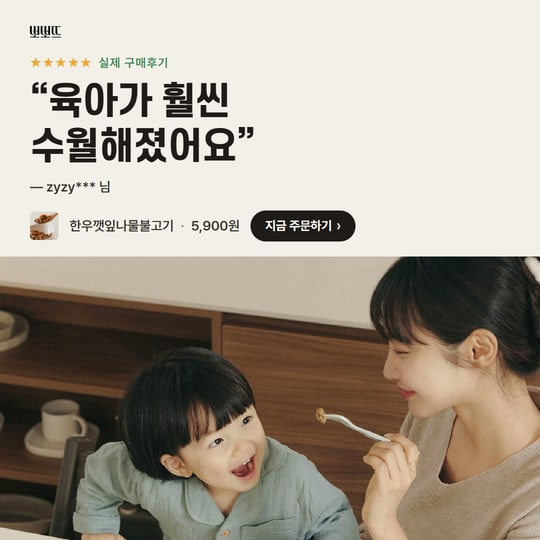 “육아가 훨씬 수월해졌어요” |  “육아가 훨씬 수월해졌어요” |  “육아가 훨씬 수월해졌어요” |
| 1 · 리뷰 · B안후기형 틀 | 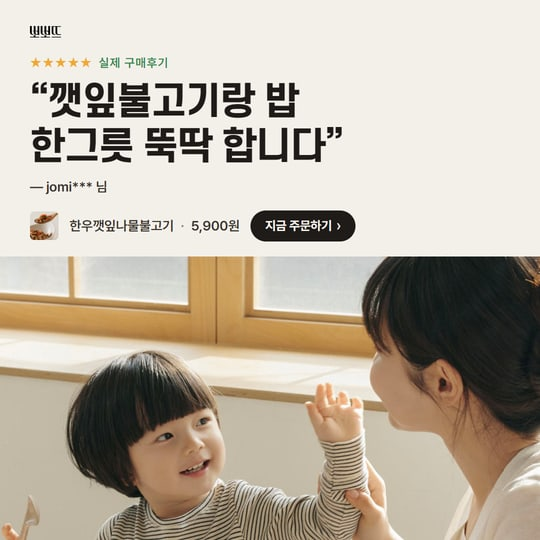 “깻잎불고기랑 밥 한그릇 뚝딱 합니다” |  “멀 해먹여야하나 고민투성이였는데 그 고민들이 한꺼번에 사라졌어요” | 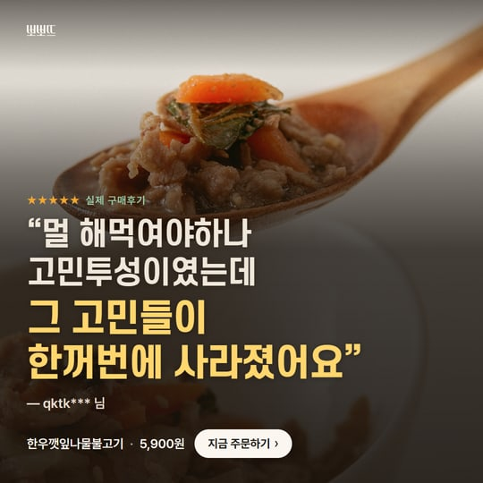 “멀 해먹여야하나 고민투성이였는데 그 고민들이 한꺼번에 사라졌어요” |
| 1 · 리뷰 · C안후기형 틀 | 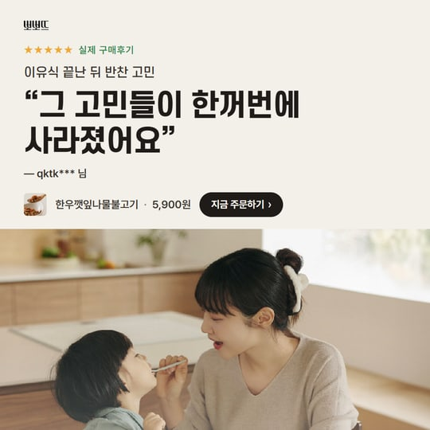 “그 고민들이 한꺼번에 사라졌어요” |  “한창 유아식 거부중인 아들 … 잘 먹습니다!” | 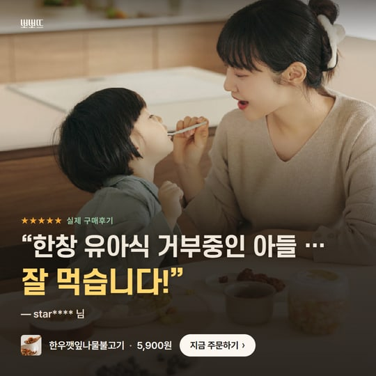 “한창 유아식 거부중인 아들 … 잘 먹습니다!” |
| 2 · 밥태기 · A안다크형 틀 | 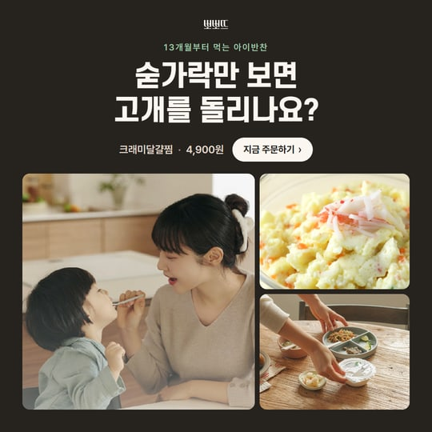 숟가락만 보면 고개를 돌리나요? |  숟가락만 보면 고개를 돌리나요? → 이건 받아먹어요 |  숟가락만 보면 고개를 돌리나요? → 이건 받아먹어요 |
| 2 · 밥태기 · B안질문형 틀 | 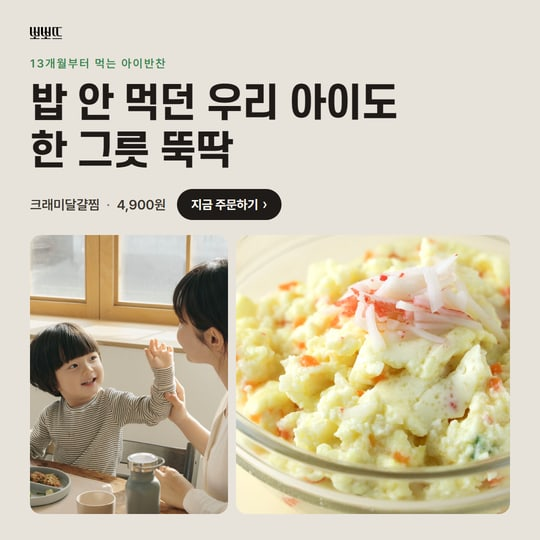 밥 안 먹던 우리 아이도 한 그릇 뚝딱 |  물고만 있고 안 삼키나요? → 부드러워 술술 넘어가요 | 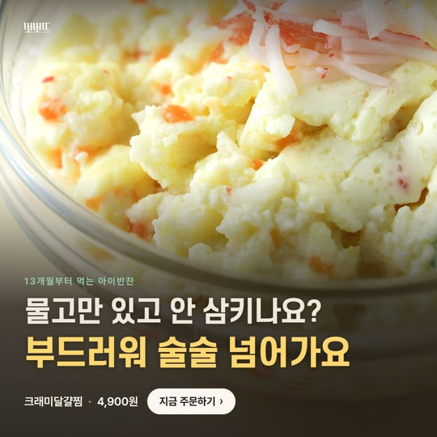 물고만 있고 안 삼키나요? → 부드러워 술술 넘어가요 |
| 2 · 밥태기 · C안에디토리얼형 틀 | 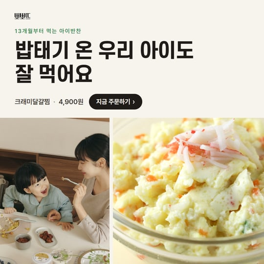 밥태기 온 우리 아이도 잘 먹어요 |  밥 먹일 때마다 전쟁이죠? → 이 반찬이면 휴전이에요 | 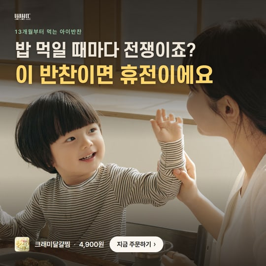 밥 먹일 때마다 전쟁이죠? → 이 반찬이면 휴전이에요 |
| 3 · 영양 · A안질문형 틀 | 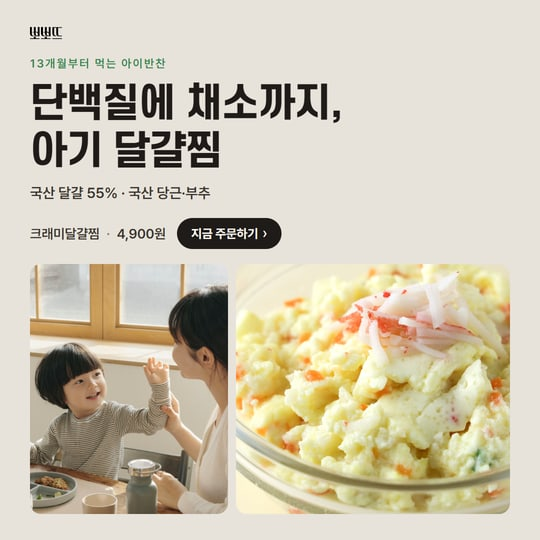 단백질에 채소까지, 아기 달걀찜 |  채소 골고루 먹이기 힘드시죠? → 한 그릇에 다 담았어요 |  채소 골고루 먹이기 힘드시죠? → 한 그릇에 다 담았어요 |
| 3 · 영양 · B안에디토리얼형 틀 | 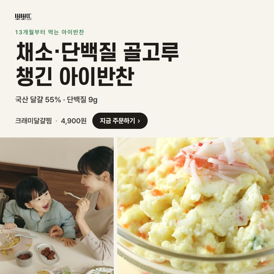 채소·단백질 골고루 챙긴 아이반찬 |  단백질 챙기기 늘 고민이죠? → 한 그릇에 9g | 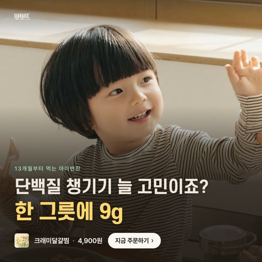 단백질 챙기기 늘 고민이죠? → 한 그릇에 9g |
| 3 · 영양 · C안다크형 틀 |  쑥쑥 크는 아이, 단백질은 달걀로 |  채소만 쏙 골라내나요? → 잘게 섞어 넣었어요 | 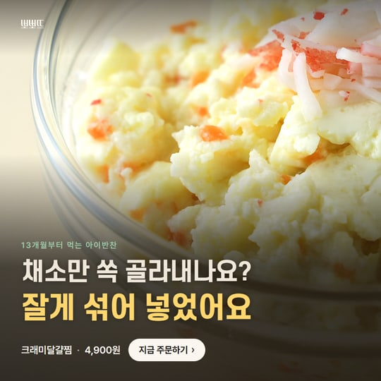 채소만 쏙 골라내나요? → 잘게 섞어 넣었어요 |
| 4 · 밥태기 + 영양 · A안다크형 틀 | 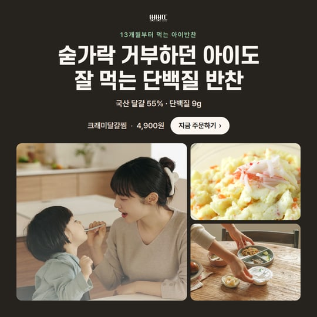 숟가락 거부하던 아이도 잘 먹는 단백질 반찬 |  숟가락 거부하던 아이도 → 잘 먹는 단백질 반찬 |  숟가락 거부하던 아이도 → 잘 먹는 단백질 반찬 |
| 4 · 밥태기 + 영양 · B안에디토리얼형 틀 | 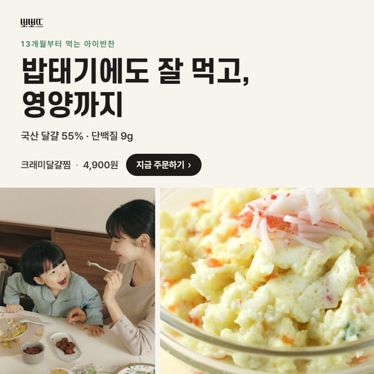 밥태기에도 잘 먹고, 영양까지 |  밥태기에 영양까지 걱정되죠? → 잘 먹고, 단백질 9g까지 | 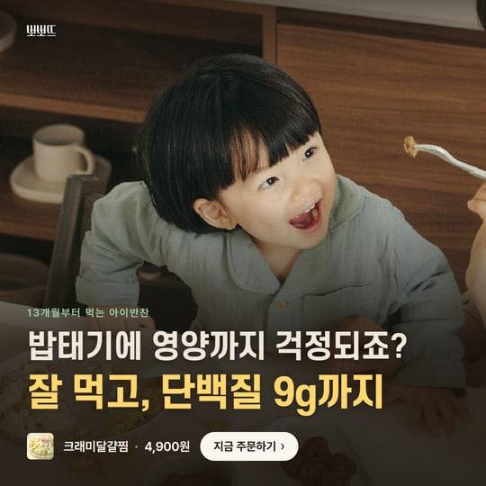 밥태기에 영양까지 걱정되죠? → 잘 먹고, 단백질 9g까지 |
| 4 · 밥태기 + 영양 · C안질문형 틀 |  밥 안 먹던 아이도 잘 먹고, 영양까지 |  밥은 거부, 영양은 걱정? → 술술 넘어가는 단백질·채소 |  밥은 거부, 영양은 걱정? → 술술 넘어가는 단백질·채소 |
새로 추가 · 버전 4
큰 제목은 「고민 → 해결」, 사진은 문구에 맞게
- 고민 → 해결 — 윗줄(흰 글씨)에 엄마가 공감할 고민, 아랫줄(노란 글씨)에 해결을 넣어 큰 제목만 봐도 무엇이 좋아지는지 보이게 했습니다. 모두 8단어 이내입니다.
- 무난한 서술 · 오해 소지 제거 — “채소·단백질 골고루 챙긴 아이반찬”, “단백질은 달걀로”(달걀만 든 것처럼 보임) 같은 문장은 뺐습니다. 리뷰 제목에서 반찬 이름(“깻잎불고기랑…”)과 부연 문구도 뺐습니다.
- 사진 맞춤 — 「고개를 돌리나요?」처럼 고민을 묻는 밥태기 제목에는 웃으며 먹는 사진 대신 달걀찜 사진을 썼고, 「잘 먹는」·「휴전」처럼 해결을 말하는 제목에는 떠먹여 주는 사진·하이파이브 사진을 썼습니다.
- 리뷰는 실제 후기 — 한우깻잎나물불고기 별점 5점 후기 3개의 문장을 그대로 옮겼습니다(아래 표, 줄인 곳은 “…”).
- 사진 한계 — 지금 있는 뽀뽀뜨 사진(아이·엄마 3장, 음식 클로즈업 2장) 안에서 고른 것이라 같은 사진을 다르게 잘라 다시 쓴 안이 있습니다. 고민하는 표정·먹여 주는 순간·음식 클로즈업 사진을 더 받으면 바꿔 넣겠습니다.
버전3 → 버전4 (정사각)


리뷰에 쓴 후기 (모두 별점 5점, 한우깻잎나물불고기)
버전 4
버전3 디자인 + 큰 제목 「고민 → 해결」 + 문구에 맞춘 사진 12안 · 48장
버전3처럼 사진을 화면 끝까지 깔고 글을 올렸습니다. 큰 제목은 윗줄(흰 글씨)이 고민, 아랫줄(노란 글씨)이 해결입니다. 그림을 누르면 PNG로 받습니다.
1 · 리뷰
A안 · “육아가 훨씬 수월해졌어요” 3단어 · 사진: 아이·엄마 식탁


B안 · “멀 해먹여야하나 고민투성이였는데 그 고민들이 한꺼번에 사라졌어요” 7단어 · 사진: 불고기 숟가락 클로즈업
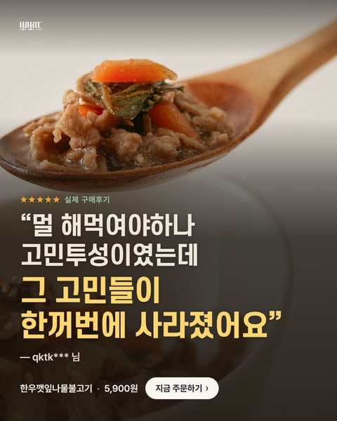
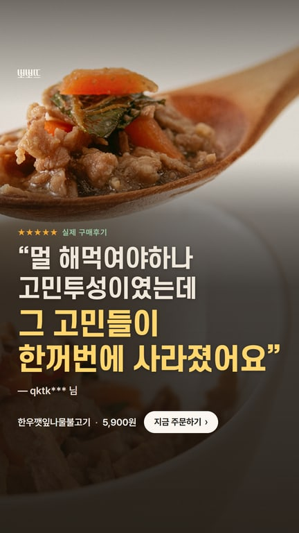
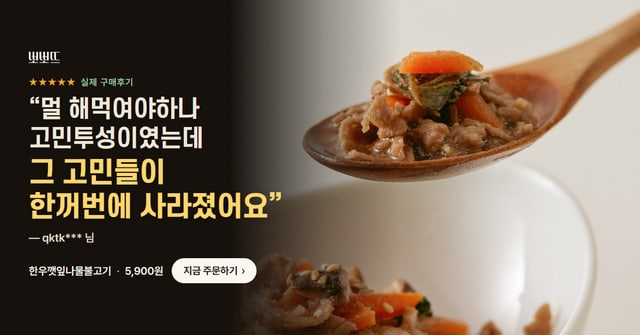
C안 · “한창 유아식 거부중인 아들 … 잘 먹습니다!” 6단어 · 사진: 엄마가 떠먹여 주는 장면
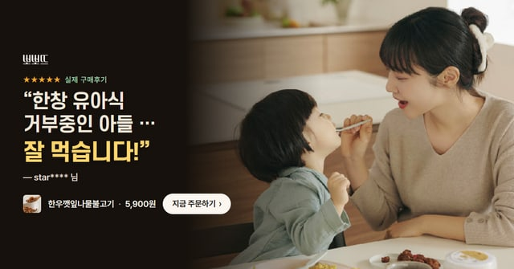
2 · 밥태기
A안 · 숟가락만 보면 고개를 돌리나요? → 이건 받아먹어요 6단어 · 사진: 크래미달걀찜 클로즈업


B안 · 물고만 있고 안 삼키나요? → 부드러워 술술 넘어가요 7단어 · 사진: 크래미달걀찜 클로즈업
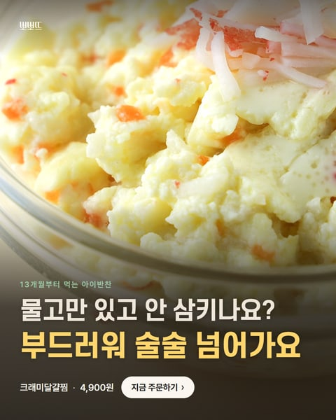
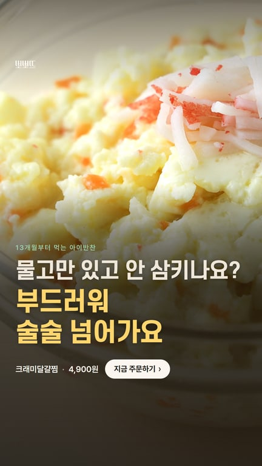
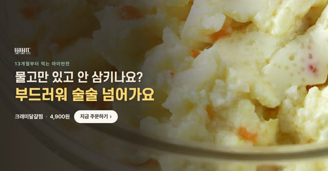
C안 · 밥 먹일 때마다 전쟁이죠? → 이 반찬이면 휴전이에요 7단어 · 사진: 아이·엄마 하이파이브
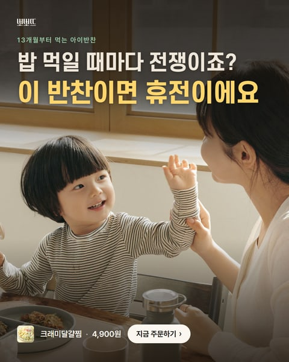
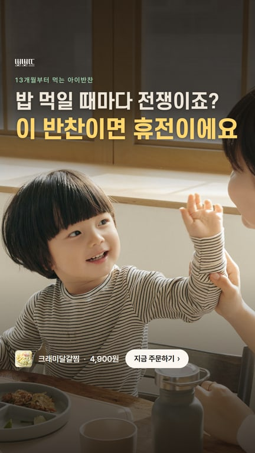
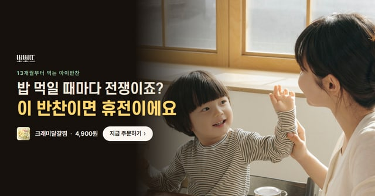
3 · 영양
A안 · 채소 골고루 먹이기 힘드시죠? → 한 그릇에 다 담았어요 8단어 · 사진: 크래미달걀찜 클로즈업


B안 · 단백질 챙기기 늘 고민이죠? → 한 그릇에 9g 7단어 · 사진: 아이·엄마 하이파이브
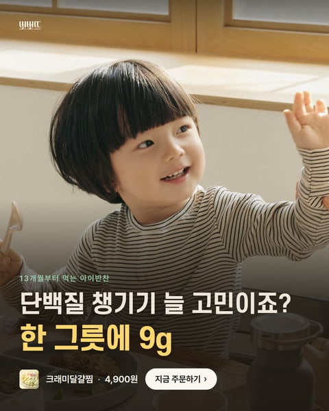
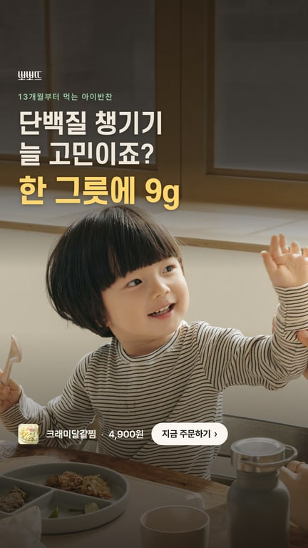
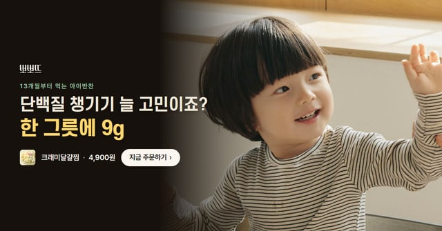
C안 · 채소만 쏙 골라내나요? → 잘게 섞어 넣었어요 6단어 · 사진: 크래미달걀찜 클로즈업
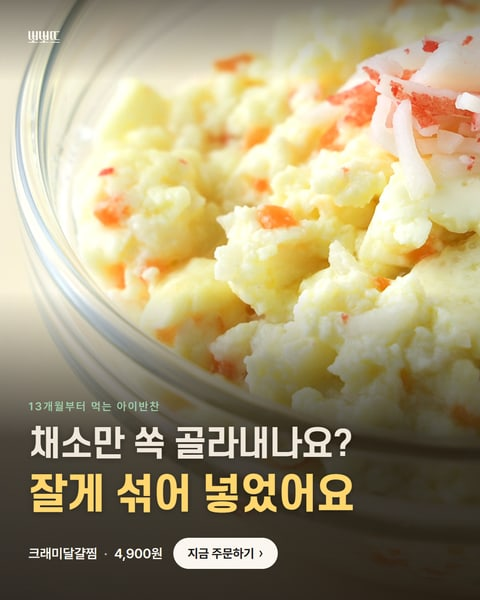
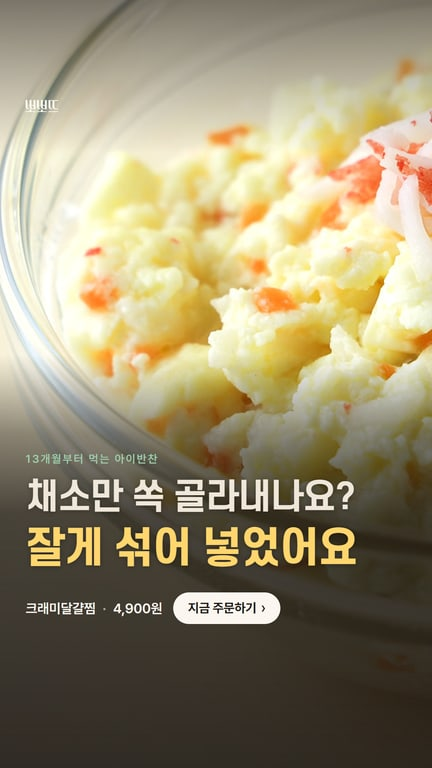
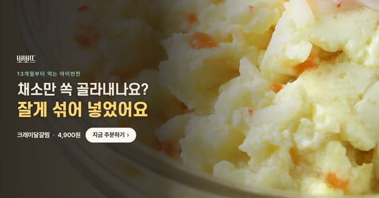
4 · 밥태기 + 영양
A안 · 숟가락 거부하던 아이도 → 잘 먹는 단백질 반찬 7단어 · 사진: 엄마가 떠먹여 주는 장면


B안 · 밥태기에 영양까지 걱정되죠? → 잘 먹고, 단백질 9g까지 7단어 · 사진: 아이·엄마 식탁
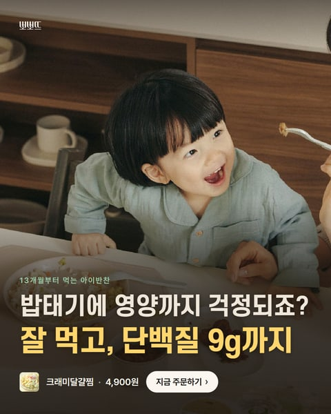
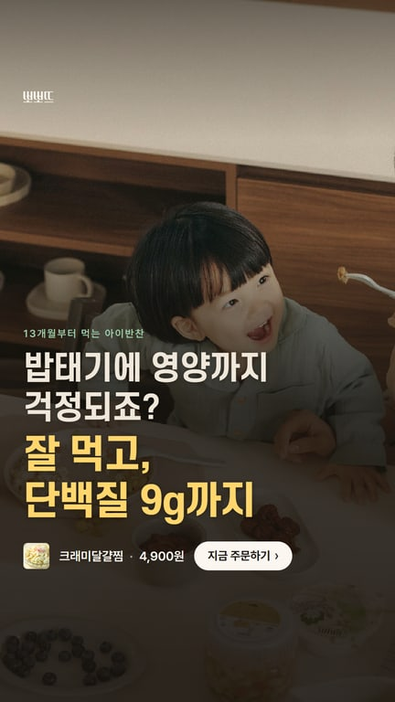
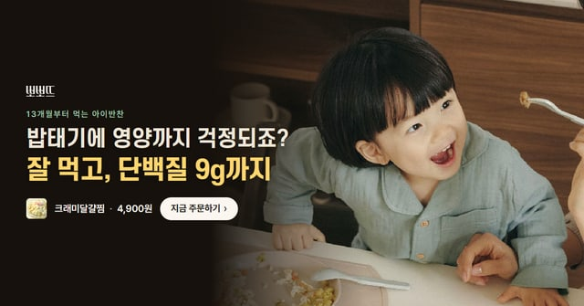
C안 · 밥은 거부, 영양은 걱정? → 술술 넘어가는 단백질·채소 7단어 · 사진: 크래미달걀찜 클로즈업


10/20 수정 — 음식 사진 위에 겹쳐 올린 아이 사진을 옆으로
버전2의 에디토리얼형(A안)과 질문형(C안)은 달걀찜 사진 위에 아이 사진을 작게 겹쳐 올렸었습니다. 아이 사진과 달걀찜 사진이 겹치지 않게 나란히 놓는 배치로 바꿨습니다. 밥태기·영양·밥태기+영양 각 2안 × 4사이즈 = 24장이고, 가로형(1200×628)은 오른쪽에 위아래로 놓았습니다. 글·색·사이즈·파일명은 그대로이고, 나머지 버전2 24장과 버전1·버전3은 손대지 않았습니다.
| 안 | 수정 전 | 수정 후 |
|---|---|---|
| 2 · 밥태기 · A안밥태기 온 우리 아이도 잘 먹어요 |  | |
| 2 · 밥태기 · C안밥 안 먹던 우리 아이도 한 그릇 뚝딱 |  | |
| 3 · 영양 · A안채소·단백질 골고루 챙긴 아이반찬 |  | |
| 3 · 영양 · C안단백질에 채소까지, 아기 달걀찜 |  | |
| 4 · 밥태기 + 영양 · A안밥태기에도 잘 먹고, 영양까지 |  | |
| 4 · 밥태기 + 영양 · C안밥 안 먹던 아이도 잘 먹고, 영양까지 |  | |
세 버전 공통으로 지킨 것
- 메시지 하나 — 한 장에 큰 제목 하나와 행동 버튼 「지금 주문하기」 하나만 넣었습니다.
- 짧은 큰 제목 — 모든 큰 제목이 8단어 이내입니다(아래 표). “부드러운 아기 달걀찜, 한 숟갈부터” 같은 부연 문구는 뺐습니다.
- 큰 글씨 — 큰 제목 글씨를 정사각 70~82px, 세로 4:5 80~92px, 스토리 96~106px로 키웠습니다. 버전1보다 1.4~2배 큽니다.
- 숫자는 남김 — 국산 달걀 55% · 단백질 9g · 4,900원은 상세페이지 표기 그대로입니다. 리뷰 1,097 · 별점 4.7은 꼬마잡채 숫자라 크래미달걀찜 배너에는 넣지 않았습니다.
- 아기 반찬 맥락 — 아이·엄마 사진과 「13개월부터 먹는 아이반찬」은 그대로 들어갑니다. 아이 사진은 음식 사진 위에 겹치지 않게 따로 놓았습니다.
| 안 | 큰 제목 (버전3 · 바꾸기 전 버전2) | 단어 | 함께 쓴 숫자·출처 |
|---|---|---|---|
| 1 · 리뷰 · A안 | “육아가 훨씬 수월해졌어요” | 3 | — zyzy*** 님 |
| 1 · 리뷰 · B안 | “깻잎불고기랑 밥 한그릇 뚝딱 합니다” | 5 | — jomi*** 님 |
| 1 · 리뷰 · C안 | “그 고민들이 한꺼번에 사라졌어요” | 4 | — qktk*** 님 |
| 2 · 밥태기 · A안 | 밥태기 온 우리 아이도 잘 먹어요 | 6 | |
| 2 · 밥태기 · B안 | 숟가락만 보면 고개를 돌리나요? | 4 | |
| 2 · 밥태기 · C안 | 밥 안 먹던 우리 아이도 한 그릇 뚝딱 | 8 | |
| 3 · 영양 · A안 | 채소·단백질 골고루 챙긴 아이반찬 | 4 | 국산 달걀 55% · 단백질 9g |
| 3 · 영양 · B안 | 쑥쑥 크는 아이, 단백질은 달걀로 | 5 | 국산 달걀 55% · 단백질 9g |
| 3 · 영양 · C안 | 단백질에 채소까지, 아기 달걀찜 | 4 | 국산 달걀 55% · 국산 당근·부추 |
| 4 · 밥태기 + 영양 · A안 | 밥태기에도 잘 먹고, 영양까지 | 4 | 국산 달걀 55% · 단백질 9g |
| 4 · 밥태기 + 영양 · B안 | 숟가락 거부하던 아이도 잘 먹는 단백질 반찬 | 7 | 국산 달걀 55% · 단백질 9g |
| 4 · 밥태기 + 영양 · C안 | 밥 안 먹던 아이도 잘 먹고, 영양까지 | 7 | 국산 달걀 55% · 단백질 9g |
버전2·버전4의 큰 제목은 위 「버전2 문구 교체」 표에 있습니다. 리뷰 각도는 버전1과 같이 기존 4차 후기형의 한우깻잎나물불고기 별점 5점 후기입니다. 큰 제목에는 그 후기의 한 구절을 원문 그대로 옮겼습니다.
한눈에 비교 — 버전1·3은 이전 문구, 버전2·4는 같은 새 문구
정사각(1080×1080) 기준입니다. 누르면 해당 버전으로 이동합니다.


버전 2
글 줄이고 크게 · 문구는 버전4와 같게 12안 · 48장
버전1과 같은 틀(에디토리얼·다크·질문형·후기형)에서 글을 줄이고 키운 디자인입니다. 10/20부터 큰 제목을 버전4와 똑같이 바꿔, 같은 안끼리는 디자인만 다릅니다. 안 이름(A·B·C)도 버전4와 같은 문구를 뜻합니다. 글이 빽빽하지 않게 질문(고민)은 작게, 답(해결)은 크게 쓰고 핵심 단어에 주황색을 넣었습니다.
1 · 리뷰
A안 · “육아가 훨씬 수월해졌어요” 후기형 틀


B안 · “멀 해먹여야하나 고민투성이였는데 그 고민들이 한꺼번에 사라졌어요” 후기형 틀


C안 · “한창 유아식 거부중인 아들 … 잘 먹습니다!” 후기형 틀


2 · 밥태기
A안 · 숟가락만 보면 고개를 돌리나요? → 이건 받아먹어요 다크형 틀


B안 · 물고만 있고 안 삼키나요? → 부드러워 술술 넘어가요 질문형 틀


C안 · 밥 먹일 때마다 전쟁이죠? → 이 반찬이면 휴전이에요 에디토리얼형 틀


3 · 영양
A안 · 채소 골고루 먹이기 힘드시죠? → 한 그릇에 다 담았어요 질문형 틀


B안 · 단백질 챙기기 늘 고민이죠? → 한 그릇에 9g 에디토리얼형 틀


C안 · 채소만 쏙 골라내나요? → 잘게 섞어 넣었어요 다크형 틀


4 · 밥태기 + 영양
A안 · 숟가락 거부하던 아이도 → 잘 먹는 단백질 반찬 다크형 틀


B안 · 밥태기에 영양까지 걱정되죠? → 잘 먹고, 단백질 9g까지 에디토리얼형 틀


C안 · 밥은 거부, 영양은 걱정? → 술술 넘어가는 단백질·채소 질문형 틀


버전 3
사진 꽉 채우고 글 올리기 12안 · 48장
사진을 화면 끝까지 깔고 어두운 그라데이션을 덮어 글을 또렷하게 했습니다. 아이 사진은 위쪽에, 음식 사진은 음식이 밝게 보이도록 아래쪽에 글을 올렸습니다.
1 · 리뷰
A안 · “육아가 훨씬 수월해졌어요” 3단어


B안 · “깻잎불고기랑 밥 한그릇 뚝딱 합니다” 5단어


C안 · “그 고민들이 한꺼번에 사라졌어요” 4단어


2 · 밥태기
A안 · 밥태기 온 우리 아이도 잘 먹어요 6단어


B안 · 숟가락만 보면 고개를 돌리나요? 4단어


C안 · 밥 안 먹던 우리 아이도 한 그릇 뚝딱 8단어


3 · 영양
A안 · 채소·단백질 골고루 챙긴 아이반찬 4단어


B안 · 쑥쑥 크는 아이, 단백질은 달걀로 5단어


C안 · 단백질에 채소까지, 아기 달걀찜 4단어


4 · 밥태기 + 영양
A안 · 밥태기에도 잘 먹고, 영양까지 4단어


B안 · 숟가락 거부하던 아이도 잘 먹는 단백질 반찬 7단어


C안 · 밥 안 먹던 아이도 잘 먹고, 영양까지 7단어


참고
- 사진은 popote.kr에 있는 뽀뽀뜨 사진(상세페이지 클로즈업, 회사소개·메인 배너의 아이·엄마 사진, 상세페이지의 상차림 사진)만 썼습니다. 모델 사진의 유료 광고 사용 범위는 집행 전에 확인이 필요합니다.
- 버전3의 세로형(1080×1920)은 원본 사진이 작아 1.6~1.9배로 키워 썼습니다. 휴대폰 화면에서는 티가 나지 않지만, 더 큰 원본이 있으면 바꾸면 더 선명해집니다.
- 버전4는 버전3와 같은 사진 풀배경 디자인이라 세로형 사진 확대 정도도 같습니다.
- 폴더: 바탕화면 「작업 폴더 › 마케팅 연구」의 「버전1 / 버전2 / 버전3 / 버전4」 안에 각도별(1_리뷰 · 2_밥태기 · 3_영양 · 4_밥태기+영양) → 사이즈별로 들어 있습니다.